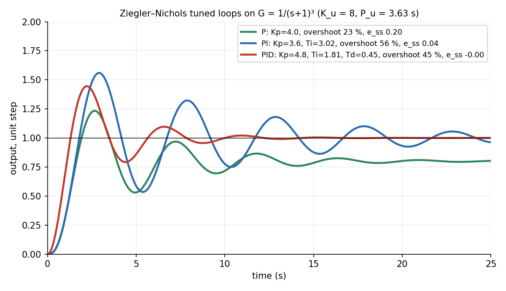

Measurements, Instrumentation and Control · Control · 3 min read
PID Control and Tuning
The error drives the controller. P acts on the present error (fast, but leaves an offset), I acts on the accumulated error (removes the offset, adds lag and overshoot), D acts on the rate of change (anticipates, damps, amplifies noise). Choose the least action that works; tune by experiment, for example by Ziegler–Nichols.
Part of Measurements, Instrumentation and Control - MOC. Previous: Feedback, Block Diagrams and Transfer Functions. Next: Frequency Response, Nyquist Plots and Stability Margins.
1. The three actions
| Action | Does | Cost |
|---|---|---|
| P, gain | immediate correction proportional to error; larger is faster and smaller offset | steady-state offset (type-0 plant); high oscillates or goes unstable |
| I, | integrates the error until it is zero: zero steady-state error to steps | more phase lag; slower, more overshoot; integral windup when the actuator saturates |
| D, | responds to the trend; adds damping | amplifies sensor noise; used with a filter, or on the measurement only |
Which to choose. P alone for forgiving loops (level in a tank); PI for most process loops (flow, temperature, speed: accuracy without derivative noise); PID where the plant has lag and speed is wanted (position servo, temperature with a slow response). Anti-windup: stop integrating while the actuator is saturated.
2. Ziegler–Nichols tuning (closed-loop method)
- Set , (pure P) and raise until the output oscillates steadily: the ultimate gain , with period .
- Read the settings:
| Controller | |||
|---|---|---|---|
| P | |||
| PI | |||
| PID |
These give a quarter-amplitude decay response: aggressive, with 25–60 % overshoot; detune ( down 20–40 %) for smoother control.
3. Worked example
Plant (three equal lags, e.g. three thermal stages). The closed loop with gain goes unstable at , oscillating at rad/s so s. Simulated closed-loop unit step responses with Z–N settings:
| Controller | Settings | Overshoot | Steady-state error | Settling (2 %) |
|---|---|---|---|---|
| P | 23 % | 0.20 (20 % off) | never reaches | |
| PI | , s | 56 % | 0.04 at 25 s, slowly converging | > 25 s |
| PID | , s, s | 45 % | 0 | 11 s |
P leaves a 20 % error. Adding I removes it but rings more (56 % overshoot). Adding D reduces the ringing and speeds convergence: the PID reaches the 2 % band in 11 s, where the PI is still oscillating at 25 s. Z–N is a starting point: 45 % overshoot is too much for most processes.

4. Practical points
- Derivative filter: with –20; derivative on the measurement avoids a spike when the set-point jumps.
- Set-point weighting and feed-forward reduce overshoot for set-point changes without hurting disturbance rejection.
- Cascade control: an inner fast loop (valve position, motor current) inside an outer slow loop (temperature, speed).
- Digital implementation: sampling at least 10 times per closed-loop time constant.
- Dead time limits the useful gain; with a long delay use a Smith predictor or a model-based design.
- Using derivative action on a noisy signal without a filter.
- Letting the integral wind up when the actuator saturates: output overshoots hugely after the saturation ends.
- Expecting integral action to help a type-1 plant's offset: a plant that already integrates has none.
- Applying Z–N settings to an integrating or high-delay process without checking.
- Raising to reduce offset: the offset falls only as and stability limits it; use I.
Predict first: a room heater with a P-only thermostat. Will the room reach the set-point?
No: the heater power is proportional to the error, so a non-zero error is needed to supply the power that balances the heat loss. The room settles below the set-point (offset). An integral term raises the output until the offset is zero.
Why does adding D reduce overshoot?
It reacts to the rate of approach: as the output rushes toward the set-point the error falls quickly, , and D reduces the control output before the target is reached: effective damping.
5. Connections
- Feedback, Block Diagrams and Transfer Functions — the closed-loop structure and steady-state error.
- Second-Order Systems - Damping and Overshoot — D adds damping; I adds a pole at the origin that can reduce the damping.
- Frequency Response, Nyquist Plots and Stability Margins — why and appear: they are the gain and phase crossover.
- Measurements, Instrumentation and Control - MOC — sensors and filters in the loop.
- Resonance and Buckling - Instability as an Eigenvalue Problem — instability at a critical gain is a loss of stability at a threshold, as with buckling at a critical load.